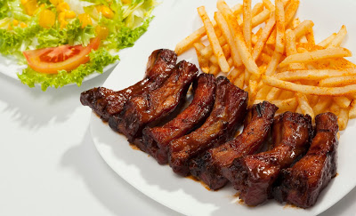

10 tips para hacer la parrillada perfecta
1/12/2018

Para preparar la parrillada perfecta no necesitas ser un experto en carnes y tampoco, es necesario gastar demasiado dinero.
Si te gustaría aprender a preparar la mejor parrillada a la que tus amigos hayan asistido, te compartimos los siguientes tips; desde cómo manejar la carne hasta como evitar gastar demás.
1. Sazona la carne generosamente; esto es lo que le dará a la carne un delicioso sabor ya que, las especias y los ingredientes de la marinada permearan la carne, ayudando a que quede más jugosa.
2. Para lograr el sellado perfecto, debes dejar la carne reposar por unos minutos a temperatura ambiente; esto forma una costra salada alrededor de la carne lo que ayuda a retener sus jugos.
3. Asegúrate de precalentar la parrilla a fuego alto y cocinar la carne a fuego medio alto. Esto hará que la carne tenga un sellado perfecto y adquiera las típicas marcas negras.
Costillitas a la BBQ sin hornear
1/12/2018

Hola como están hoy les traigo una receta riquísima ideal para cuando no tenemos horno o no lo queremos utilizar, o como en mi caso le dan pereza limpiar el horno y mas con esta receta que deja el horno horrible y lleno de grasa.
1. Lo primero que vamos hacer es preparar nuestra carne osea lavarla y picarla del tamaño que quieran ya sean si quieran pedazos grande o pequeños los cuales son recomendable para los chiquitines de la casa. luego ponemos a hervir la carne con abundante agua y le agregamos dos anís estrella dos cucharada de sal y 3 cucharada de salsa de solla, tapamos y dejamos cocer por como media hora o hasta que la carne este.
2. Luego que escurrimos la carne la ponemos en un salten con un poco de aceite a que se doren , con un poquito de sal y se pongan de un lindo color, si el salten no es muy grande y no caben todos los pedazos de carne en una sola partida pues hacemos una parte cuando esta estén retiramos del salten y hacemos las demás, cuando esta estén incorporamos las demás, ya estarán un poco mas pequeña ya que este tipo de carne mientras mas lo cocinas mas se achican, ya que estén todas en el salten le echamos mucho, pero mucho ketchup y dos cucharada de azúcar y remueven ya en este punto solo tienen que ir salteando y moviendo para que cada pedazo de costilla quede untado de la salsa cuando todas estén embarradas, las apagan y la sirven, que con que la pueden servir bueno, si es de comida pueden hacer un arroz con maíz o con puerro, si es de cena lo pueden hacer con unas papa saltead en puré, fritas o al horno como quieran. espero que les gusten aunque se que después que la aprueben jamas la harán de otra manera bye cuídense mucho besos.